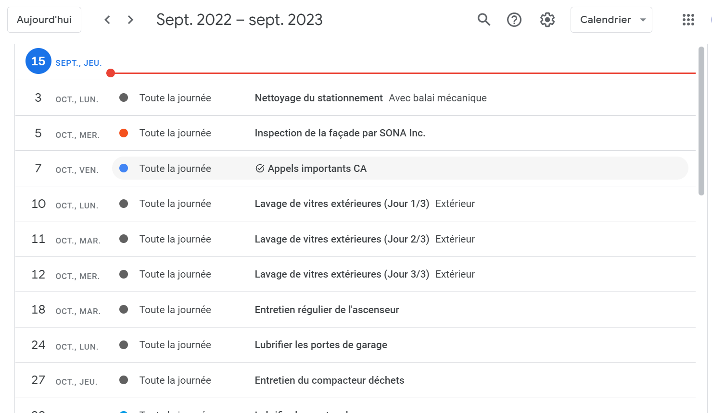

Carnet d'entretien de copropriété
Agenda partagé, hybride ou système GMAO dédié?
Voir nos offres Vidéo 3 min. Essai gratuit
Vous avez en main le carnet d’entretien du consultant et vous devez maintenant organiser la gestion d’entretien de votre immeuble? Voici un mini-guide qui vous aidera à faire les bons choix de moyens pour atteindre cet objectif.
Une question de taille d’immeuble
La figure 1 illustre clairement que le nombre d’unités privatives est un facteur déterminant dans le choix d’un système de suivi de carnet d'entretien. Il tient compte à la fois de l’effort requis et des ressources disponibles pour faire le suivi de l’entretien.
Les petites copropriétés de moins de 10 unités peuvent utiliser un agenda partagé comme celui de Google™ (figures 2 et 3) accompagné d’un système de classification (papier ou numérique) de factures permettant de suivre l’historique d'entretien du bâtiment.
Pour les copropriétés ayant de 10 à 20 unités, le système papier devient un peu lourd et ralentit la prise de décision. Un chiffrier comme Excel™ ou comme Google™ Sheets utilisé en parallèle avec un agenda partagé (système hybride) offre une solution accessible plus rapidement aux administrateurs (voir figure 4). Par contre, notez que le partage d'un fichier Excel entre les différents intervenants s'avère onéreux et que les erreurs de saisie sont à surveiller.
Les immeubles ayant plus de 20 unités privatives ont plusieurs équipements et un nombre d'interventions d'entretien plus élevé. Ceux-ci requièrent un logiciel GMAO (Gestion de Maintenance Assistée par Ordinateur) comme CondoFix qui inclut de nombreuses fonctionnalités (calendrier, saisie de factures, tableau de bord, etc.) et qui peut aisément se partager entre les différents usagers.
Intégration de la facturationUne des particularités du secteur de la copropriété est la dépendance presque complète envers les fournisseurs pour l’accomplissement des tâches d’entretien. Il devient alors primordial de pouvoir intégrer les factures des fournisseurs dans un système de gestion d’entretien (GMAO) comme CondoFix afin de tenir compte des coûts de main d’œuvre et de matériel applicables à chaque équipement de l’immeuble.
Importance des notificationsL'utilisation d'un agenda partagé ou d'un GMAO tel CondoFix est avantageuse étant donné que les administrateurs peuvent recevoir une notification pour chaque intervention prévue très prochainement. De même, les événements d'entretien peuvent être programmés pour se répéter afin de réfléter la fréquence recommandée dans le carnet d'entretien soumis par le consultant.
Figure 1 - Grille de choix d'outil

Figure 2 - Exemple de calendrier d'entretien sur Agenda Google™
Figure 3 - Exemple de liste priorisée d'interventions sur Agenda Google™

Figure 4 - Exemple de GMAO avec Google™ Sheets/Forms